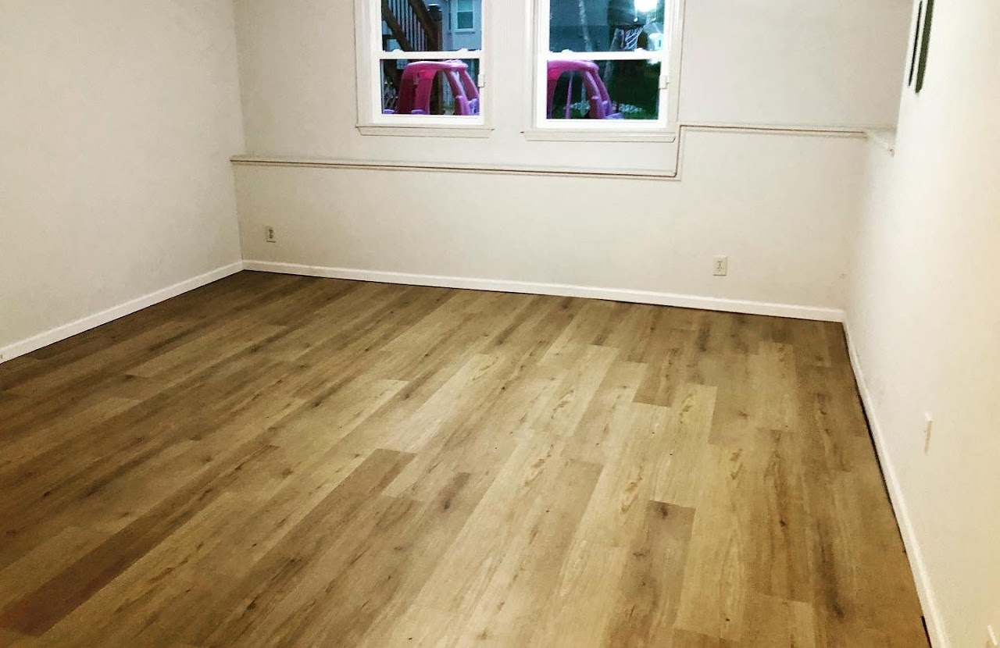
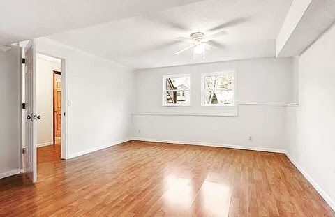
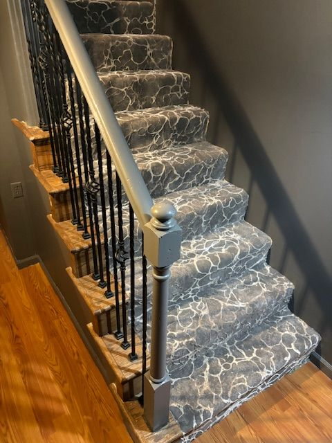
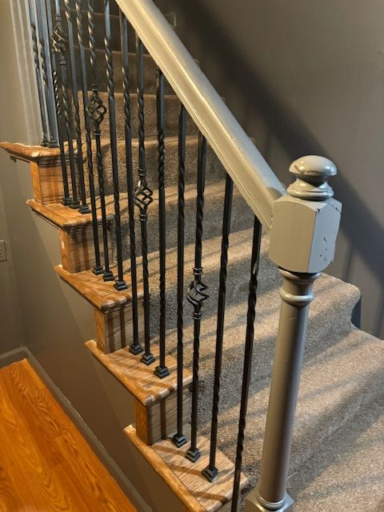
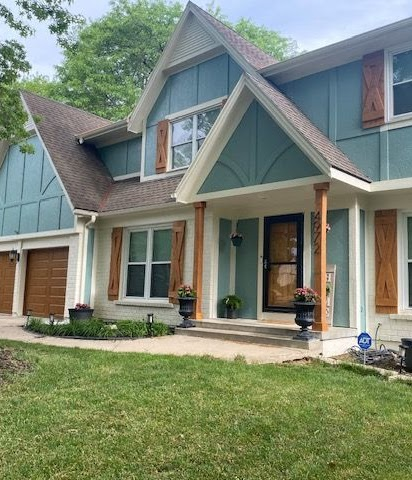
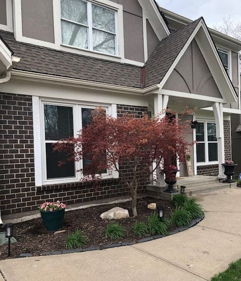
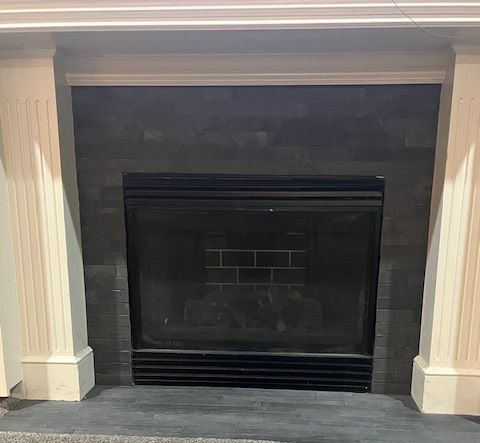
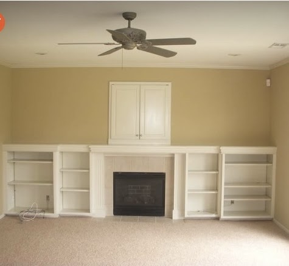

Every space holds hidden potential. Explore the thoughtful details, layout realignments, and textured layering that bring timeless warmth and functionality to everyday homes.
Drag the slider handle left and right to reveal the dramatic transformations.
Click on the cards to toggle seamlessly between the Before and After views.


Replacing damp, stained dark carpeting with warm, water-resistant luxury oak vinyl planking to create an inviting family zone.


Rejuvenating high-traffic wooden stairs with an elegant, modern grey patterned carpet runner and dark steel metal spindle contrast.


A transformative repaint replacing faded yellow siding and rotting brown trim with crisp alabaster white and dark charcoal accents.


Modernizing a heavy, rustic stacked stone fireplace with a smooth, neutral plaster coat and clean, thin floating oak shelving.